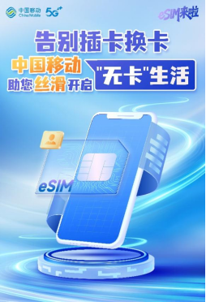

国行eSIM四宗罪补充：
1.办理eSIM需要去营业厅，而买手机送的小米移动，可凭借卡板ICCID直接OTA选号下卡。你说eSIM在中国不就是马拉火车，还得落地境外机场再连当地WiFi下卡
2.硬件限制，eUICC芯片没有China CI无法写入国内自签名eSIM，只能接受GSMA国际通用eSIM。即使三星大中华区互刷，但最新港版系统对国行机拒绝eSIM下卡，得降级而且OneUI8.5把odin丢维护模式去了
3.运营商恶心，只给外宾短期套餐提供eSIM，而且是GSMA标准。中国内地人士只能使用身份证，连护照都不给你用，比港澳台同胞还差
4.两卡上限，不仅国行eSIM手机上限2个eSIM profile，而且EID行业联网上报，同时只能注册2个国内卡。就会出现iPhone Air出二手变单卡手机，原主人还原并移除eSIM不行，还要解绑，必须把原主人喊来营业厅补
这不是马拉火车，这是运营商贱的，甚至连无卡手机都能弄两卡上限配合监管落实断卡行动

1.办理eSIM需要去营业厅，而买手机送的小米移动，可凭借卡板ICCID直接OTA选号下卡。你说eSIM在中国不就是马拉火车，还得落地境外机场再连当地WiFi下卡
2.硬件限制，eUICC芯片没有China CI无法写入国内自签名eSIM，只能接受GSMA国际通用eSIM。即使三星大中华区互刷，但最新港版系统对国行机拒绝eSIM下卡，得降级而且OneUI8.5把odin丢维护模式去了
3.运营商恶心，只给外宾短期套餐提供eSIM，而且是GSMA标准。中国内地人士只能使用身份证，连护照都不给你用，比港澳台同胞还差
4.两卡上限，不仅国行eSIM手机上限2个eSIM profile，而且EID行业联网上报，同时只能注册2个国内卡。就会出现iPhone Air出二手变单卡手机，原主人还原并移除eSIM不行，还要解绑，必须把原主人喊来营业厅补
这不是马拉火车，这是运营商贱的，甚至连无卡手机都能弄两卡上限配合监管落实断卡行动

国行esim四宗罪：
1.办理esim要去营业厅（esim最特色的内容就是在家办理，空中发卡，我都tm去营业厅了要esim干啥？）
2.必须国行esim手机（国行外版esim手机不互通，以前买外版手机还能插国内sim卡，以后买外版手机用不了国内esim） https://t.co/HQKDM7It2b https://t.co/CTykZvvUY6
1.办理esim要去营业厅（esim最特色的内容就是在家办理，空中发卡，我都tm去营业厅了要esim干啥？）
2.必须国行esim手机（国行外版esim手机不互通，以前买外版手机还能插国内sim卡，以后买外版手机用不了国内esim） https://t.co/HQKDM7It2b https://t.co/CTykZvvUY6